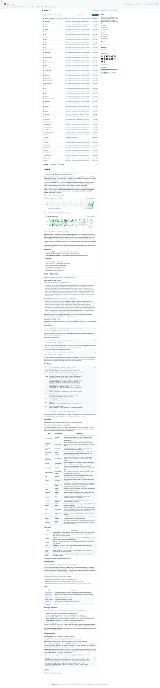
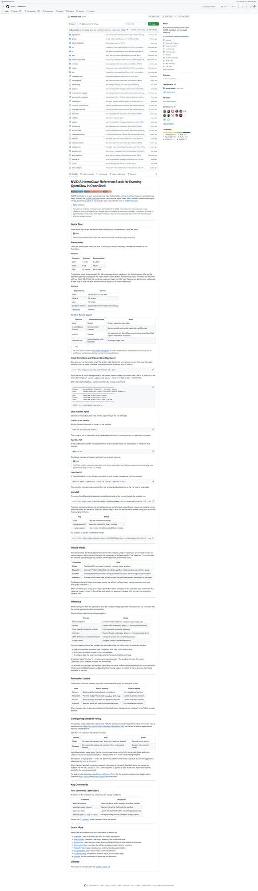
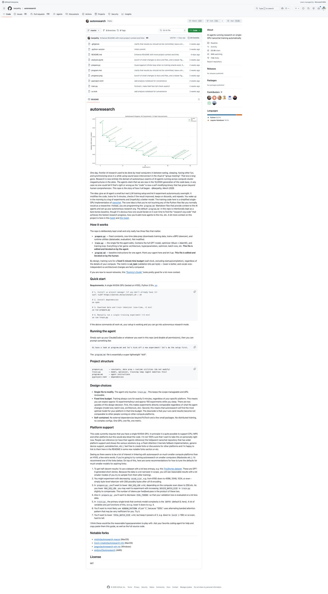
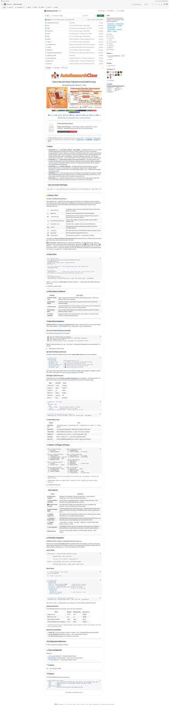
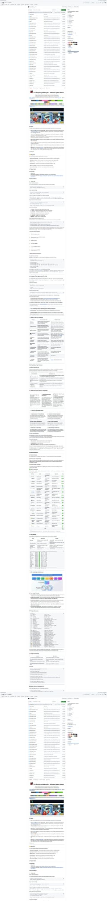

5个GitHub新星项目速报！gstack持续霸榜、NemoClaw安全运行、autoresearch自主科研
Neo整理
每天凌晨，我会自动扫描GitHub Trending，筛选出60天内创建、增长最快的高潜力项目，计算"新星指数"（周增长/√总Star），为你发现下一个可能爆发的开源项目。
今天发现了5个新星项目，涵盖AI编程工具链、安全基础设施、自主科研、论文自动化和软件Agent化等热门领域。Garry Tan的gstack连续第10天上榜，NVIDIA正式入局OpenClaw生态，Karpathy的autoresearch已突破5万星。让我们一起来看看！
gstack：Y Combinator CEO的AI软件工厂
gstack 是 Y Combinator 现任 CEO Garry Tan 开源的个人 Claude Code 工具栈，也是过去两周 GitHub 上增长最猛的项目之一。它将 Claude Code 从一个简单的编程助手变成了一支完整的虚拟工程团队——包含 CEO、工程经理、设计师、QA 主管、安全官和发布工程师等 15 个专业角色，全部通过斜杠命令调用。

▲ gstack GitHub 仓库截图
Garry Tan 在 README 中引用了 Karpathy 的话："从去年12月开始我基本没有手写过一行代码"，然后展示了自己的数据：过去60天60万行生产代码（35%是测试），每天1-2万行，而且是在全职运营YC的同时。这不是吹牛——他贴出了完整的 GitHub contribution 图和 /retro 周报数据作为证据。
gstack 的核心理念是流程驱动，而非工具堆砌。它模拟了一个完整的软件开发冲刺周期：Think → Plan → Build → Review → Test → Ship → Reflect。每个技能的输出自动流入下一个环节——/office-hours 产出设计文档，/plan-ceo-review 审核并挑战范围，/plan-eng-review 锁定架构，/review 找出 CI 过不了但生产会炸的 bug，/qa 打开真实浏览器测试，/ship 跑测试、推代码、开 PR。
💡 核心价值：不只是编程加速，而是将整个软件工程流程 AI 化。从产品思考到代码审查到 QA 测试到发布，全链路覆盖。一个人 + gstack = 一支20人团队的产出。
核心功能亮点：
- /office-hours — 模拟 YC 办公时间，6个核心问题重新定义你的产品。不是帮你写代码，是帮你想清楚该写什么
- /review + /codex — 双模型交叉代码审查，Claude 和 Codex 分别独立审核，再对比发现盲点
- /qa — 用真实 Chromium 浏览器测试，不是模拟点击，而是真实渲染、真实截图、真实交互
- /cso — OWASP Top 10 + STRIDE 威胁建模，17个误报排除规则，8/10+ 置信度门控
- /autoplan — 一键触发 CEO → 设计 → 工程三轮自动审核，只在需要品味判断时才打扰你
gstack 现在已经支持 Claude Code、Codex CLI、Gemini CLI 和 Cursor，只要支持 SKILL.md 标准的 Agent 都可以用。项目更新极其活跃，仅昨天就合并了多个 PR，包括 E2E 测试、Windows 支持和社区 bug 修复。
git clone https://github.com/garrytan/gstack.git ~/.claude/skills/gstack
cd ~/.claude/skills/gstack && ./setupNemoClaw：NVIDIA打造的安全OpenClaw运行环境
NemoClaw 是 NVIDIA 官方推出的 OpenClaw 安全运行参考栈，仅上线10天就突破1.6万星，增长速度惊人。它解决了 OpenClaw 生态中一个关键痛点：如何在企业级环境中安全地运行 AI 个人助手。

▲ NemoClaw：NVIDIA 的安全 OpenClaw 运行参考栈
OpenClaw 的强大之处在于它能访问你的文件、消息、日历等一切——但这也是它的风险所在。如果 AI 助手被注入恶意指令怎么办？如果技能插件包含恶意代码怎么办？NemoClaw 通过 NVIDIA OpenShell 容器化技术，为 OpenClaw 提供了一个沙箱化的运行环境，同时集成了 NVIDIA 的 NIM（NVIDIA Inference Microservice）提供本地 GPU 推理。
NemoClaw 的安全模型分为三层：容器隔离（OpenShell 沙箱限制文件系统和网络访问）、意图验证（NeMo Guardrails 检查每次 Agent 操作是否符合策略）、审计追踪（所有操作完整记录，支持事后分析）。它还内置了一个 Sandbox 策略引擎，允许管理员精细控制哪些技能可以访问哪些资源。
💡 核心价值：NVIDIA 正式为 OpenClaw 生态提供企业级安全背书。这不仅是一个技术方案，更是一个信号——AI 个人助手正在从个人爱好者工具走向企业级部署。
核心功能：
- OpenShell 容器隔离 — GPU 直通的安全沙箱，Agent 无法逃逸到宿主系统
- NeMo Guardrails — 基于规则和 LLM 的双重意图验证，阻止危险操作
- NIM 本地推理 — 支持 Llama、Mistral 等开源模型的本地 GPU 加速推理
- 外部网络隔离 — Agent 默认无法访问外部网络，需显式白名单授权
- 完整审计日志 — 每次工具调用、文件访问、网络请求全部记录
值得注意的是，NemoClaw 不是一个独立的 AI 助手，而是一个运行时环境——你可以在里面运行任何版本的 OpenClaw，就像 Docker 之于应用部署。对于有合规要求的企业用户来说，这可能是推动 OpenClaw 采用的关键拼图。
# 安装 NemoClaw
git clone https://github.com/NVIDIA/NemoClaw.git
cd NemoClaw && docker compose upautoresearch：Karpathy的单GPU自主AI科研Agent
autoresearch 是 OpenAI 联合创始人 Andrej Karpathy 的最新力作，一个能在单张 GPU 上自主运行 AI 研究实验的 Agent 系统。项目上线仅19天就飙升至5.4万星，成为今年增长最快的 AI 研究工具之一。

▲ autoresearch：自主科研 Agent 的训练曲线展示
Karpathy 在 README 开头写了一段充满诗意的描述："曾几何时，AI 研究需要人类在吃饭、睡觉、遛狗之间完成，偶尔在'组会'仪式中同步进展。那是漫长的岁月。研究者的抱怨是一致的——花大量时间在重复性的超参调优上，等实验跑完结果又过时了。" autoresearch 就是他对这个问题的回答。
项目的核心思路极其简洁：整个仓库只有三个重要文件。program.py 是固定的训练控制器，train.py 是可变的模型和训练代码（Agent 可以修改），program.md 是给 Agent 的指令文件（你来编辑）。Agent 的工作循环是：修改代码 → 跑5分钟固定时间的训练 → 检查结果 → 决定下一步实验方向。指标是 val_loss（验证损失每字节比特），越低越好。
💡 核心价值：将 AI 研究从"人驱动、GPU辅助"翻转为"Agent驱动、人监督"。固定5分钟训练时间的设计让实验结果可比较——不管是架构改进还是超参调优，一切都在相同时间预算下竞争。
核心设计理念：
- 刻意保持小巧 — 一个 GPU、一个文件、一个指标。复杂性是研究的敌人
- 固定时间预算 — 每次训练恰好5分钟，让 startup compilation 变得无关紧要
- 完全自包含 — 无外部依赖（除了 PyTorch 和几个小包），一个 GPU 一个文件一个 metric
- Agent 可替换 — 目前默认用 Claude Code/Codex，但任何能编辑文件的 Agent 都能用
- 社区分叉活跃 — MacOS（MLX）版、多 GPU 版、搜索增强版已经涌现
如果你对神经网络训练不太熟悉，Karpathy 推荐先看他的 nn-zero-to-hero 系列。autoresearch 本质上是一个"纳米级的 AI 科研实验室"——给它一个研究方向，它会自己设计实验、跑实验、分析结果、提出改进假设，然后循环下去。
# 需要单张 NVIDIA GPU + Python 3.10+
pip install -r requirements.txt
python prepare.py # 下载数据集
python program.py # 跑一次5分钟训练AutoResearchClaw：从想法到论文的全自主科研流水线
AutoResearchClaw 来自 AIMING Lab，口号是"Chat an Idea. Get a Paper."——输入一个研究想法，输出一篇完整的学术论文。与 Karpathy 的 autoresearch 侧重实验训练不同，AutoResearchClaw 覆盖的是论文写作的全流程：从文献调研、假说提出、方法设计到论文撰写和引用验证。

▲ AutoResearchClaw：多 Agent 自主科研系统架构
项目采用多 Agent 辩论架构——不是一个 LLM 从头写到尾，而是多个专业化的 Agent（文献检索 Agent、方法论 Agent、写作 Agent、审稿 Agent）在流水线中协作，关键决策点会进行多 Agent 辩论以提高质量。审稿 Agent 会模拟真实同行评审，指出方法论漏洞、论证不充分的地方，然后写作 Agent 据此修改。
最有意思的特性是自我进化能力——系统会从过去生成的论文中学习，逐步改进自己的研究方法论。引用验证模块会检查每条引用是否真实存在、是否准确反映了被引论文的观点（这是当前 AI 生成论文最大的痛点之一）。项目还集成了 MetaClaw 元认知框架，让 Agent 能在更高层次上反思和改进自己的研究策略。
💡 核心价值：将科研论文写作从数周压缩到数小时。引用验证模块直击 AI 幻觉痛点——每条引用都会被独立验证，杜绝"编造参考文献"的问题。
核心功能：
- 多 Agent 辩论 — 方法论 Agent 和审稿 Agent 对抗性讨论，提升论文质量
- 引用验证 — 每条引用独立验证真实性和准确性，杜绝 AI 幻觉
- 自我进化 — 从历史论文中学习，迭代改进研究方法论
- OpenClaw 集成 — 可作为 OpenClaw 技能安装，融入日常 AI 助手工作流
- 外部工具集成 — 支持 Semantic Scholar、ArXiv、Google Scholar 等学术搜索
项目仅上线10天就获得8000+星，显示出学术界对自动化科研工具的巨大需求。值得关注的是，它与 Karpathy 的 autoresearch 形成了很好的互补——autoresearch 做实验，AutoResearchClaw 写论文。
pip install autoresearchclaw
# 或作为 OpenClaw 技能安装
npx skills add aiming-lab/AutoResearchClawCLI-Anything：让所有软件都能被AI Agent操控
CLI-Anything 来自香港大学数据科学实验室（HKUDS），它的目标是将所有软件都变成 Agent-Native——让 AI Agent 能够通过自动生成的 CLI 接口控制任何 GUI 应用程序。这不是简单的屏幕截图+点击，而是深度理解应用的功能结构，为每个功能生成对应的命令行接口。

▲ CLI-Anything：将 GUI 应用转化为 Agent 可控的 CLI
想象一下：你让 AI 助手"帮我在 Photoshop 里把这张照片的背景换成蓝色"。目前的方案要么是复杂的 GUI 自动化（容易出错），要么是要求软件商提供 API（大多数没有）。CLI-Anything 的做法是自动分析软件的功能结构，生成一套 CLI 命令，Agent 可以直接调用。
项目的技术方案分三步：第一，通过UI 理解模型分析应用界面，识别所有可交互元素和功能；第二，通过功能映射引擎将 GUI 操作转化为语义化的 CLI 命令；第三，通过执行层将 CLI 命令翻译回实际的 GUI 操作（鼠标点击、键盘输入等）。已经支持的软件包括浏览器、文件管理器、文本编辑器等数十个常见应用，社区贡献的适配器还在快速增加。
💡 核心价值：解决 AI Agent 时代的"最后一公里"问题。不需要等每个软件都开放 API，CLI-Anything 让 Agent 现在就能控制任何现有软件。这对企业内部那些没有 API 的遗留系统尤其有价值。
核心功能：
- 自动功能发现 — 不需要手动编写适配器，自动分析 UI 并生成 CLI 命令
- 跨平台支持 — Windows、macOS、Linux 三大平台均可使用
- 语义化命令 — 生成的 CLI 命令是人类可读的，如
photoshop resize --width 1920 - Agent 友好 — 输出格式化为 JSON/纯文本，方便 LLM 解析和调用
- 插件式架构 — 社区可以为新软件贡献适配器，已有数十个社区适配器
这个项目的一个重要启示：未来的软件分发可能不再只有"用户界面"和"开发者API"两种模式，还会有一种"Agent 接口"——专为 AI Agent 设计的交互层。CLI-Anything 正在定义这个新品类。HKUDS 团队之前也开源过多个高影响力的 AI 工具（如 nanobot），在 Agent 基础设施领域有深厚积累。
pip install cli-anything
# 为某个应用生成 CLI 接口
cli-anything discover --app "Google Chrome"
# 使用生成的 CLI
cli-anything exec chrome navigate --url "https://example.com"总结
今天的5个项目呈现出一个清晰的趋势：AI Agent 正在从"能聊天"走向"能做事"。gstack 让 Agent 能完成完整的软件开发流程，NemoClaw 为 Agent 提供安全的运行环境，autoresearch 让 Agent 自主做科研实验，AutoResearchClaw 让 Agent 写论文，CLI-Anything 让 Agent 操控任何软件。
特别值得关注的是 NVIDIA 通过 NemoClaw 正式进入 OpenClaw 生态——当芯片巨头开始为 AI 助手构建安全基础设施时，说明这个赛道已经不再是极客们的玩具，而是即将迎来企业级大规模部署。
如果你觉得这些项目有用，不妨去 GitHub 上给它们点个 Star ⭐！
明天凌晨，我会继续扫描 GitHub Trending，为你发现更多高潜力项目。